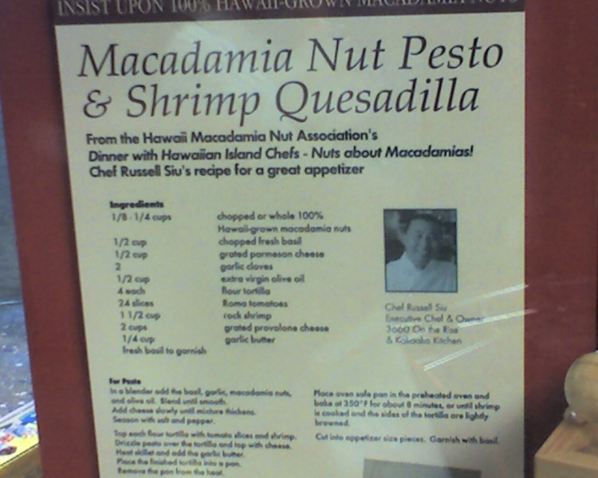

Wanda is 480 days old today.
She took her first steps.
Wanda is 480 days old today.
She took her first steps.
Wanda is 198 days old today.
Humu, Wanda, Wanda’s Grandma, and I went out for breakfast this morning. Wanda sat in her high chair at a restaurant for the first time. Overhead were remote control model airplanes and a running model train set. It was kind of like my dad was there to see it.
Wanda is 197 days old today.
Photo by Humuhumu
Wanda, her Grandma, Humu, and I went to explore Forest Creek, which used to be known as The Shire. Our friend Heather Gregg told us about it. It was supposed to be a housing development themed in a way that brings Tolkien to mind. I’ve read that the Tolkien thing was not intended, at least initially. But clearly it was embraced at some point as one of the two streets in the development is Ring Bearer Court. (The other is South Shire Lane.)
Photo by Humuhumu
The Shire was never completed because it went bankrupt when Bend’s housing market collapsed. It’s a sad story, so we’ll gloss over it and get to our experience today. I’ll just add that eventually a company purchased the whole development and building is starting again, although without the same wacky awesome commitment to theming.
I wouldn’t make a road trip to Bend just to see Forest Creek (aka The Housing Development Previously Known As “The Shire”). But if you’re in central Oregon already, you could do worse than to kill 20 minutes on a sunny day stopping by South Shire Lane and Ring Bearer Court to see this sadly half-finished but gloriously half-baked vision. Be sure, though, to get out of your car, look at the map they’ve posted, and walk along the path behind the houses among the ponds (stocked with fish), tiny amphitheater (maybe a sock puppet show would be at home there), “secret” doors, and a few other treasures. Sadly, the newer construction there isn’t anywhere nearly as over-the-top as the amazing building (and separate garage) at the end of South Shire Lane. And I don’t have high hopes for the forthcoming townhouses, but who knows? Anyway, totally worth checking out from a “this was a crazy idea, I wish they had succeeded” perspective.
As we were looking at the most thoroughly themed structures, I said to Humu: “Imagine living here and putting a tiki bar in the basement. It’s like your life turns into one big turducken.”
Humu’s take on Forest Creek: “First it was sad, then it was cute, then it was weird.”
Wanda is 196 days old today.
Humu, Wanda, and I are having a great time in Bend, Oregon. We’re here so Wanda can spend some time at Grandma’s house. This morning, we walked up Pilot Butte, one of three extinct volcanoes in the continental U.S. that are within a city. (The others are in nearby Portland, Oregon, and surprisingly in Jackson, Mississippi.) We went there because, you know, extinct volcano in city limits. Do I need another reason?
I finished a pair of job descriptions for some one-year positions I’ll hopefully be hiring for soon. Nerds interested in a great work environment and a project with a social conscience, take note.
Earlier this month, I finally redeemed the very generous gift for my 40th birthday from Humu and her mom: a trip to Hawaii for Humu and me!
The first question everyone asks is “Which islands?” Oahu, Hawaii (“The Big Island”), Maui.
The next question is usually “Where did you stay?” Waikiki, Kailua-Kona, and north of Lahaina (which were the fancy accommodations of the trip–it was a Westin resort).
“Have you ever been before?” Nope. First time for me. (Humu lived there as a child for a year and had been there once before as an adult.)
“What did you do?” Too much to answer, but some highlights were:
“Where are the pictures?” Alas, I’m not much of a shutterbug. The only picture I took was of a display in one of the airports. It was about macadamia nuts and the display prominently featured a recipe.
“Did you have a good time?” It was amazing! Thanks, Humu + Schmama!
Lotsa stuff happening in our life together, the biggest of course that it’s now an “our” kind of a deal (which is pretty super-sweet). Naturally, as every moderne family must have these days, we’ve got our very own Trott Family Domain Name. Trottomatic.com hits the trifecta: easy to remember, easy to spell, and available. (I was lobbying for Trottopolis.com, but Trottomatic grew on me.) Also: we get to bastardize one of our favorite Sid Luscious & the Pants songs as we sing around the house: “It’s Trottomatic! It’s Trottomatically true! It’s Trottomatic! It’s Trottomatic with you!” So, you know, that’s kinda neat.
Okay, here’s a quickie guide to our initially scant content: If you’re new to either Rich or me, then the About Rich or About Humuhumu pages may be of interest. If you’d like to hear about how we came together, then How We Met is worth a gander. If you already know all that and are dying to hear details about the wedding, well… right now we’ve got bupkis. Rich did take the time to write up the story of The Proposal, though.